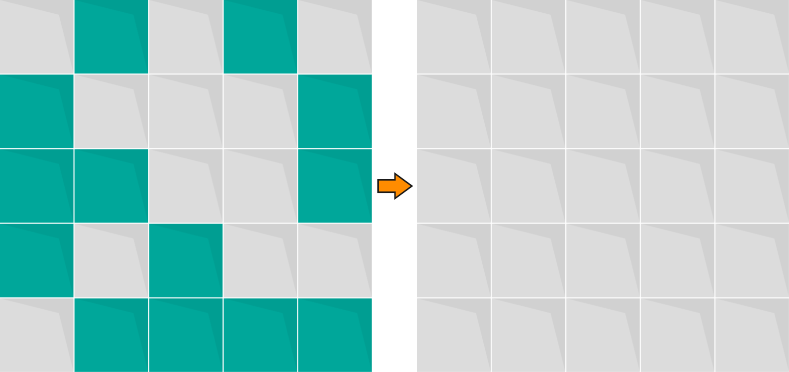

Appuyez sur les différentes cellules de la grille afin d'éliminer toutes les cellules colorées dans chacun des niveaux.
En cliquant sur une cellule, les quatre cellules adjacentes et la cellule elle-même inversent leurs couleurs.
Finissez le jeu en finissant tous les niveaux et en ayant sur chacun une médaille d'or.
Les médailles d'or sont données lorsque vous réussissez à gagner le niveau avec le minimum d'essais. Les autres médailles dépendent du nombre de coups nécessaire pour avoir la médaille d'or.
